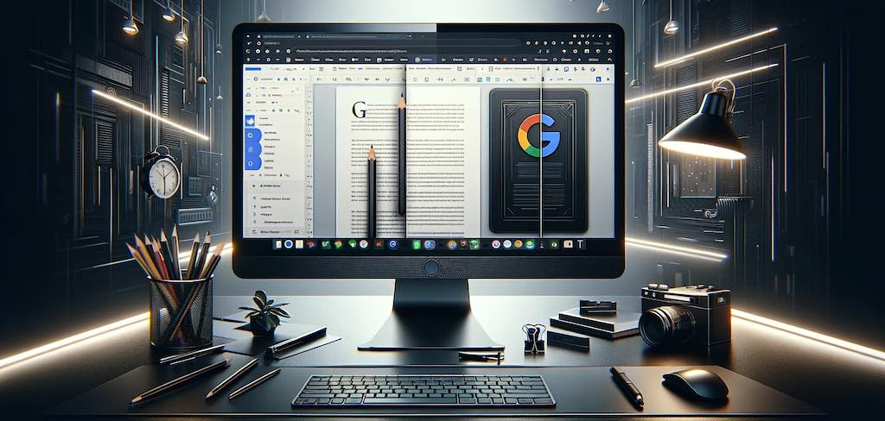

gdocweb Blog
Styling and Dark Mode
January 8th, 2024
by Shai Almog

Styling a Document isn’t as Trivial as you Might Assume
When using Google Docs it’s often tempting to reach out to the font or color toolbar to design your document as you see fit. This would work great for simple sites but as gdocweb evolves you might find it produces a result that isn’t as attractive as you might want. The reason for that is due to two important features we just added to gdocweb: custom colors and dark mode.
Dark Mode Support
We recently updated gdocweb with a new theme: Adaptive.
The Adaptive theme is identical to the default “Basic” theme but when it’s running on a device set to dark mode it will render the website with a dark version of the theme. As you can see below, this blog automatically adapts to light or dark mode. However, the transition wasn’t seamless.

Title Styling
The initial design of the blog was based on a template from Google Docs. In this template “Introducing gdocweb” was defined as a “Heading 1” style, but it was later customized to appear a bit differently from the actual “Heading 1” definition.
Headings are an important part of the web, in general your page should have only one “Heading 1” and multiple “Heading 2” elements (and possibly 3, 4, 5 etc.). If you break these rules you might suffer a search engine penalty. But it goes deeper than that, once you customize the style of the heading we can’t override it. That results in dark blue text on black background. Not very readable for the most important line within a post...
The solution is simple and it includes two parts. The first is to use styles in the document by placing the cursor on the heading and invoking “Update ‘Heading 1’ to match (or the appropriate style you want to customize). We then need to select “Apply ‘Heading 1’” to re-apply it to the current line. Besides the obvious advantages with dark mode, this also helps keep the document consistent. E.g. if we want to change the font or color for all “Heading 2” entries we can do that in one place and they will all update.
But the real advantage is in gdocweb. We can now customize specific colors within the theme. This is useful for dark mode but also useful for applying brand colors on top of the theme. We can pick replacement default colors for background and foreground of various elements and make the replacements apply only for light or dark mode. This is all a part of the themes section as seen in the image below.
Future Improvements
Ideally the themes should include the right colors out of the box but the ability to customize these colors is a crucial one. Let us know in the comments if you need deeper styling and what your technical level is. One of our planned features is a style override that will let you inject a custom style file to the page. However, this would require technical understanding and control of CSS, I’m not sure if this is something that would fit with our main demographic.
You can see the document that generated this post here.

Comments